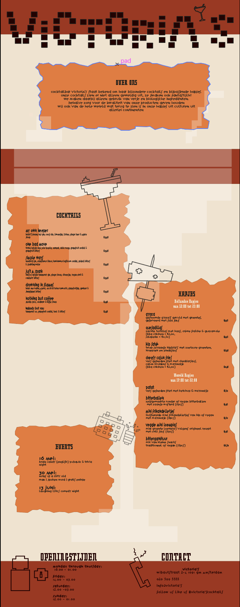

De opdracht was om een poster te omtwerpen van een cocktailbar aan de hand van jou gegeven kunstenaar.
De poster die ik heb gemaakt is geinspireerd door de typografie en fotografie van Rudy Vanderlans. Ik heb er voor gekozen de kleuren uit zijn fotografie te halen.